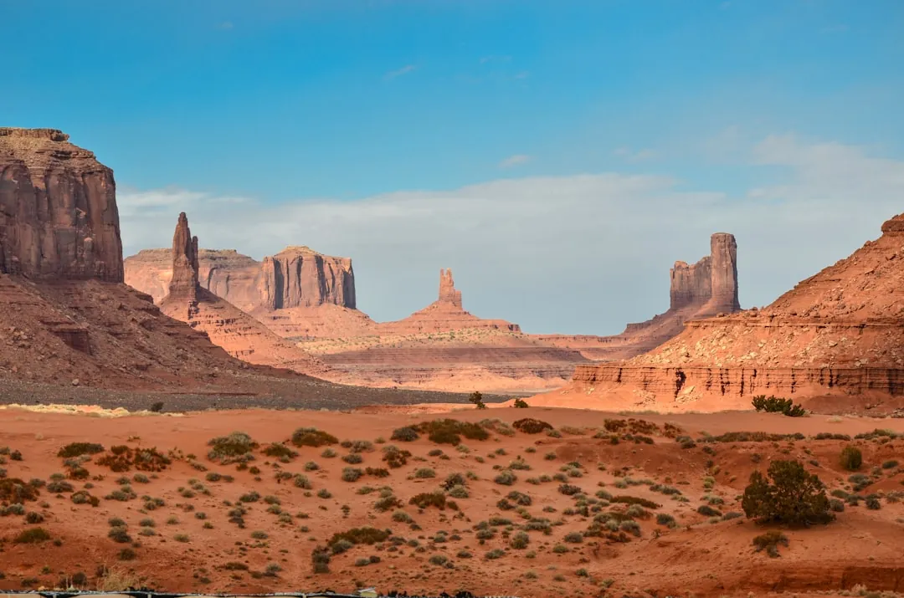
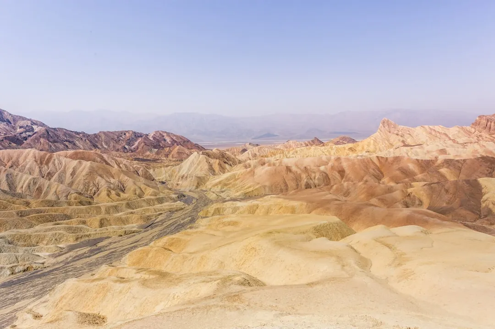
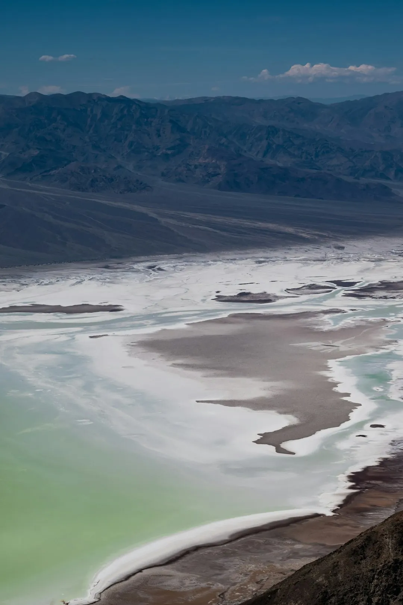

Death Valley National Park Guide: Badwater, Zabriskie Point & More
· By GoldenPath Guide Editorial Team
If you were to design a landscape that looks like the edge of the Earth, you would probably reach for the geology of Death Valley. This is the largest national park in the lower 48 states, the hottest and driest place in North America, and in many ways the most dramatic thing you will ever drive through — a place where salt flats, badlands and dunes collide under a sky so clear it doubles as a planetarium. It is a bucket-list desert, and here is how to handle it properly.
Badwater Basin
At 282 feet below sea level, Badwater Basin is the lowest point in North America, and its salt flats stretch over hundreds of square miles. Walk out onto the pan and let the white crunch underfoot; on a still day the pooled water reflects the surrounding peaks like a mirror. It is the park’s single most photographed spot, and for good reason.
Zabriskie Point
Just a short drive from the visitor center, Zabriskie Point serves up the park’s iconic golden badlands. Arrive before sunrise to watch the ridged hills glow apricot and amber as the light rakes across them — it is the kind of moment photographers set alarms for. The overlook is an easy, paved walk from the parking lot.

Dante’s View
From Dante’s View, a higher overlook 5,000 feet up the Black Mountains, you look down over the entire Badwater basin and out across the Panamint Range. It is the best panoramic vantage in the park, and a favorite sunset spot because the sprawling valley floor picks up a deep, layered red glow.

Sand Dunes & Artists Palette
The Mesquite Flat Sand Dunes rise abruptly out of the desert floor — walk up a ridge at dawn for soft light and clean dune lines. Not far away, Artists Palette is a short loop road where wind-eroded rock shows streaks of pink, green and purple, colored by minerals left behind by ancient volcanic activity.
Tickets, Fees & Where to Stay
A private vehicle pass costs $30 and covers seven consecutive days, including everyone in the car — a straightforward deal for a park this size. Visitor services cluster at Furnace Creek, which holds the main visitor center, fuel, a general store, and the park’s principal lodge and ranch-style resort. Campsites at Furnace Creek are reservable through recreation.gov for the October 15 to April 15 season and book out months ahead; outside that window many sites run first-come, first-served. Stovepipe Wells offers a smaller lodge and campground to the west, and private lodging sits just outside the park boundary in Beatty, Nevada. Wherever you sleep, top off fuel at every opportunity — stations inside the park are few and priced accordingly.
Safety in Extreme Heat
The desert’s danger is not dramatic — it is quiet dehydration. Daytime highs top 120°F for weeks each summer, and the ground radiates far hotter than the air. Carry at least a gallon of water per person per day, drink before you feel thirsty, and eat salty snacks to replace what you sweat out. Hiking after 10 a.m. in summer is inadvisable on exposed trails; rangers close some routes when conditions turn lethal. Cell coverage is patchy or nonexistent across much of the park, so download offline maps, tell someone your route, and never leave the pavement in a rental sedan — remote roads like the one to Racetrack Playa demand high clearance and chew through tires.
More of the Park
An initial visit only scratches the surface. Salt Creek holds a surprising permanent stream and tiny pupfish that somehow live in the extreme heat. Ubehebe Crater is a dramatic volcanic crater over half a mile wide, a short drive off the main road. And at remote Racetrack Playa, the famous “sailing stones” leave long trails across a dry lakebed — a scientific mystery that was only solved in recent decades, when researchers tracked the rocks sliding atop thin sheets of winter ice. For a change of pace and a dose of history, Scotty’s Castle preserves the story of a desert castle and its eccentric mining-era owners. Each of these takes real time to reach, so most visitors pick two and save the rest for a return trip.
Stargazing
Death Valley holds Gold Tier dark-sky status, meaning it is one of the best places in the country to see the Milky Way. On a moonless night, the star field is astonishing — no telescope required. Join a ranger program or just pull over somewhere dark and look up.
Best Time to Visit
Summer heat here is genuinely dangerous — temperatures routinely clear 120°F and the record stands at a blistering 134°F, set at Furnace Creek in 1913. The comfortable window is October through April, when days are mild and trails are open. In any season, bring far more water than you think you need and start early, because the desert does not forgive.
7 Day Northern California Itinerary
California Regions Guide
Ultimate California Road Trip